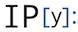

// PyPrind


The PyPrind (Python Progress Indicator) module provides a progress bar and a percentage indicator object that let you track the progress of a loop structure or other iterative computation. Typical applications include the processing of large data sets to provide an intuitive estimate at runtime about the progress of the computation.
Links: Python Package Index, GitHub Repository, Documentation, Blog Article, Video Example
// smilite
smilite is a Python module to download and analyze SMILE strings (Simplified Molecular-Input Line-entry System)
of chemical compounds from ZINC
(a free database of commercially-available compounds for virtual screening,
http://zinc.docking.org)
Now compatible with Python 3.x and Python 2.x.
Stepping through a Principal Component Analysis - using Python's numpy and matplotlib
// IPython Notebooks 
- A collection of not so obvious Python stuff you should know!- The Parzen-window technique for parameter estimation - a step-by-step approach
- Stepping through a Principal Component Analysis - using Python's numpy and matplotlib
- Sequential selection algorithms for dimensionality reduction
- Examples for solving pattern classification problems in Python
- Looking at Python's True and False evaluations
- Python performance benchmarks via
timeit
// PyStats
// Protein Science Tools
BondPack - A collection of plugins to visualize molecular bonds in PyMOL
--added on November 17th, 2013
Center of Mass Calculator
--added on September 8th, 2013
Protein-Ligand Merger
--added on July 22th, 2013
FASTA File Splitter
--added on July 22th, 2013
Mol2 to PDB Converter
--added on June 15th, 2013
PDB To FASTA Converter for multiple files
--added on April 21, 2013
PDB Downloader
--added on May 21, 2013